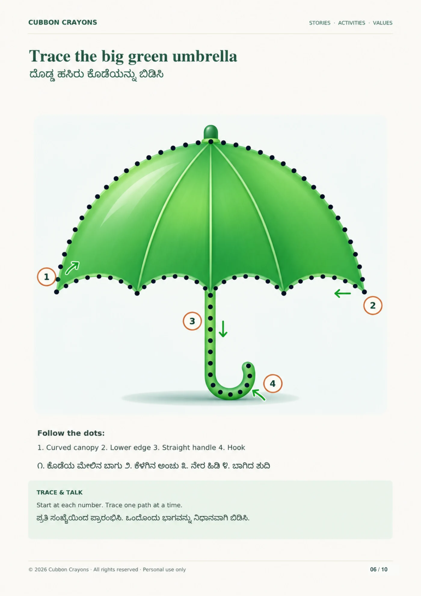

Included in story PDFs
Trace & Create
Practise tracing original dotted paths in our printable Kannada–English stories.
Browse printable story activities →CUBBON CRAYONS · LITTLE MOMENTS TOGETHER
A little time with Amma, Appa, Ajji or Tata can become a lasting memory.
Find simple, child-friendly things to say, play and create together. Every activity welcomes any caring grown-up.

Trace, draw, talk about feelings and explore everyday learning.
Explore parent activities →
Keep traditional Kannada recitations, riddles and childhood games alive.
Explore grandparent activities →
Play together, practise taking turns and share laughter across ages.
Explore family games →FIND SOMETHING TO DO TOGETHER
Showing available and planned activities
01 · ಅಪ್ಪ–ಅಮ್ಮನ ಜೊತೆ
Everyday creativity and conversation, with a grown-up nearby.
Practise tracing original dotted paths in our printable Kannada–English stories.
Browse printable story activities →Name and explore everyday feelings with simple expressions and conversations.
02 · ಅಜ್ಜಿ–ತಾತನ ಜೊತೆ
Traditional words and memories to pass on. Parents and other caregivers can join too.
Listen, repeat and remember the twelve Kannada months and six seasons with the original narration, animated illustrations and a playful quiz.
Listen & play Purochi →Listen, guess and giggle with traditional Kannada riddles.
Enjoy familiar rhymes and repeating patterns together.
03 · ಕುಟುಂಬದ ಜೊತೆ
Simple activities for siblings, parents, grandparents and the whole family.
A gentle family game about waiting, asking and sharing a moment together.
Listen, remember and add one little detail in turn.
No activities match these filters yet. Choose another age or category.